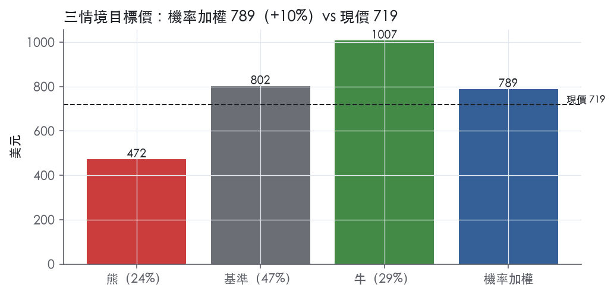
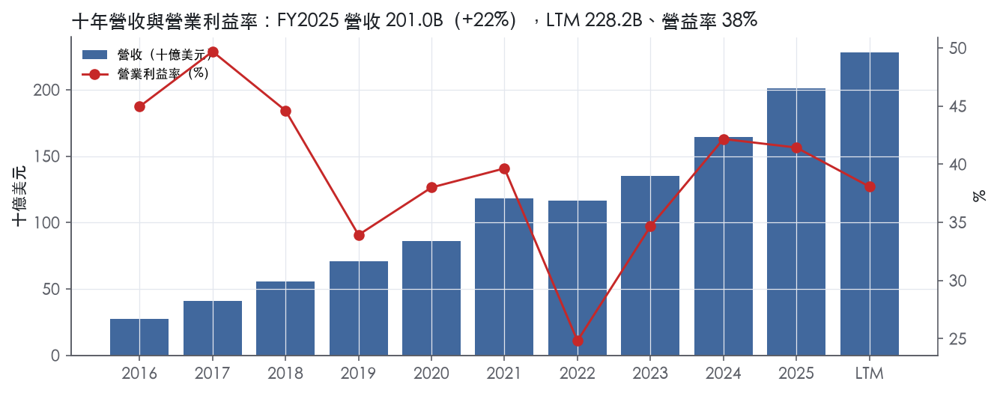
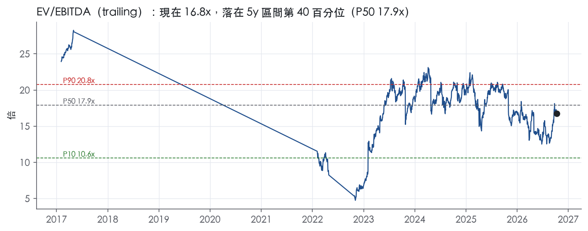
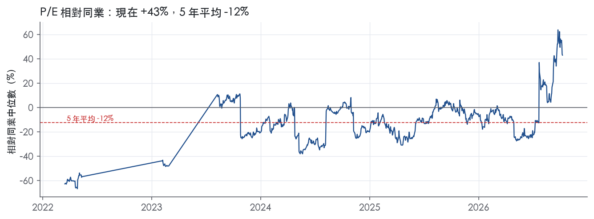
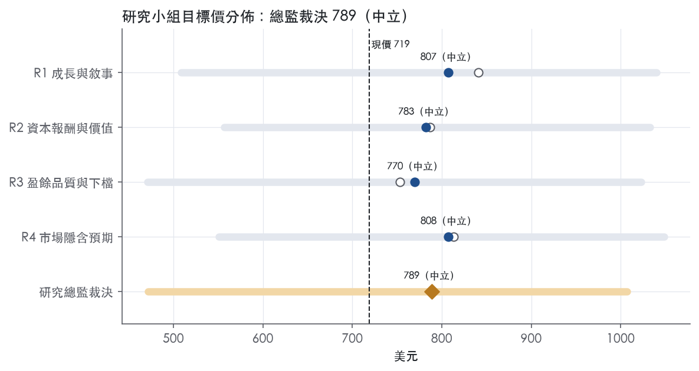
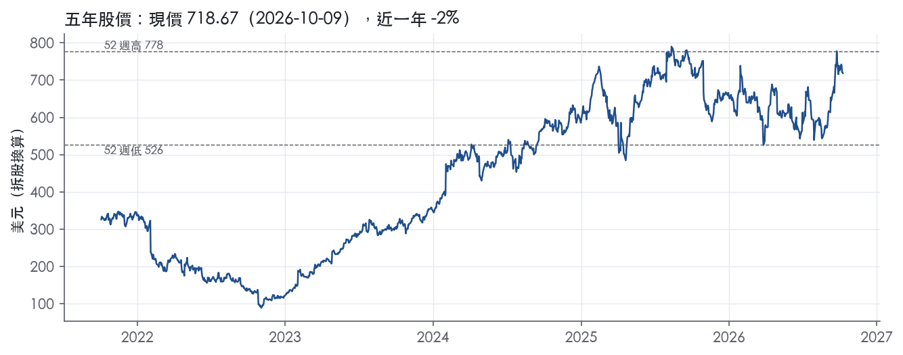

評等總表 › 通訊服務 › META
量價撐營收，資本密度壓每股價值，中性｜評等 中立｜目標價 789
| 報告日 | 評等 | 目標價 | 當時股價 | 超額報酬 |
|---|---|---|---|---|
| 2026-10-09 | 中立 | 789 | 719 | -0.2% |
| 評等 | 中立 |
| 12 個月目標價 | 789 美元 |
| 現價 | 718.67 美元（2026-10-09） |
| 預期報酬 | 股價 +9.7%＋股息 0.3%＝總報酬 +10.0%；同業籃門檻 10.2%，超額 -0.2% |
| 估值方法 | EV/EBITDA 16.0x，套在未來四季的EBITDA |
| 三情境 | 熊 472／基準 802／牛 1007 |
| 研究流程 | 四位研究員兩輪辯論＋研究總監裁決 |
| 資料來源 | SEC EDGAR XBRL、Tiingo、FRED（全免費） |
量價撐營收，資本密度壓每股價值，中性（研究總監裁決，四位研究員兩輪辯論後）
評等 中立｜12 個月目標價 789 美元（總監三情境機率加權 782 與研究員中位數 795 各半）｜現價 718.67（2026-10-09）
預期報酬：股價 +9.7%＋股息 0.3%＝總報酬 +10.0%。同業籃門檻 10.2%，超額 -0.2%。
估值方法：EV/EBITDA 16.0x，套在未來四季的EBITDA。三情境：熊 472（24%）／基準 802（47%）／牛 1007（29%）。
什麼會讓研究總監改變看法：2027 資本支出指引下緣低於 130B 且 FY2026Q3 營益率 ≥38%，倍數回 17.9x、轉偏多；FY2026Q3 營收低於 61B、青少年審判出現重大判賠、或總債務續升而股東回饋率仍在 12.7% 附近，熊機率上調、轉偏空。
| 過去四季（實際，FY2026Q2） | 未來四季 | 第 5–8 季 | 第 9–12 季 | |
|---|---|---|---|---|
| 營收（B） | 228.2B | 276.2B | 314.8B | 346.3B |
| 營收成長 | 27.7% | 21.0% | 14.0% | 10.0% |
| 營業利益率 | 38.1% | 34.0% | 33.0% | 34.0% |
| EPS（美元） | 26.52 | 30.59 | 33.67 | 37.97 |
| EPS 成長 | -3.8% | 15.4% | 10.1% | 12.8% |
| 每股股息（美元） | 2.10 | 2.10 | 2.10 | 2.10 |
| P/E（現價） | 27.1x | 23.5x | 21.3x | 18.9x |
| 股息殖利率（現價） | 0.3% | 0.3% | 0.3% | 0.3% |
過去四季為申報數字；預測為研究總監的假設、程式計算。倍數與殖利率都用現價計算，用來看現價對應各期獲利的高低。
| 情境 | 機率（歷史） | 故事 | 未來四季營收成長 | 第 5–8 季營益率 | 倍數 | 目標價 | 股價漲跌 |
|---|---|---|---|---|---|---|---|
| 熊 | 24%（23%） | 風險表第 1 條（資本支出再上修且靠舉債支應）疊加第 2 條（歐盟廣告限制上訴不利）與第 3 條（青少年審判重大損失）：營收降速而黏性費用與固定折舊不降，營益率回到 FY2022 水準，倍數落到 5y P10 與 1y P10 之間 | 12.0% | 25.0% | 11.5x | 472 | -34.4% |
| 基準 | 47%（48%） | 營收兩成上下緩降、營益率 34% 在折舊高峰見底、資本強度 55% 吃掉自由現金流與回購，倍數回到 1 年帶中位數上方 | 21.0% | 33.0% | 16.0x | 802 | 11.6% |
| 牛 | 29%（29%） | 僅靠 AI 推薦推升廣告量價（Q2 曝光 +14%、單價 +12%），資本強度隨營收攤薄，倍數回到 3 年帶 P50 18.4x（R1 的 19x 改為有錨的 3y P50） | 26.0% | 39.0% | 18.4x | 1007 | 40.1% |
目標價由程式依研究總監的驅動與倍數計算；機率由研究總監給定。括號內是歷史頻率：把這檔股票過去十年 12 個月報酬的波動形狀，置中在基準情境，結果落在各情境附近的比例。

四位研究員用不同方法各自估值，回應研究總監的質疑後交出第二輪，最後由總監逐點裁決。各研究員的主張見第七章，裁決理由見第八章，完整論證見《研究底稿》。
| 立場（一輪→二輪） | 加權目標價（一輪→二輪） | 評等（一輪→二輪） | 第二輪倍數 | 熊～牛目標價 | |
|---|---|---|---|---|---|
| R1 成長與敘事 | 看多→看多 | 841→807 | 加碼→中立 | 16.8x | 508～1040 |
| R2 資本報酬與價值 | 中性→中性 | 787→783 | 中立→中立 | 16.0x | 557～1033 |
| R3 盈餘品質與下檔 | 中性→中性 | 753→770 | 減碼→中立 | 15.5x | 471～1023 |
| R4 市場隱含預期 | 看多→中性 | 813→808 | 中立→中立 | 16.0x | 551～1049 |
| 研究總監裁決 | 中性 | 789 | 中立 | 16.0x | 472～1007 |
目標價由程式依各自的驅動與倍數計算；評等＝機率加權總報酬 − 同業籃門檻。
Meta 是一家靠廣告貨幣化社交圖譜、同時用重資本投入下一代運算平台的雙軌公司。公司使命是「build the future of human connection and the technology that makes it possible」¹。目前公司回報兩個分部：Family of Apps（FoA）與 Reality Labs（RL），「Currently, we generate substantially all of our revenue from selling advertising placements on our family of apps to marketers, which is reflected in FoA」¹，而「RL generates revenue from sales of consumer hardware products, software, and content」¹。換言之，廣告主是真正付錢的客戶，一般使用者是被貨幣化的流量與數據來源，消費者則是 RL 硬體的直接買方。
FoA 涵蓋 Facebook、Instagram、Messenger、Meta AI、Threads、WhatsApp 六大產品，廣告可投放在「Facebook, Instagram, Messenger, Threads, and WhatsApp, as well as third-party applications and websites」¹。RL 的現有產品線是 Meta Quest 系列 VR 裝置、Meta Horizon Store 軟體內容，以及 Ray-Ban Meta、Oakley Meta 等 AI 眼鏡，並已展示 Orion AR 原型與搭載 Meta Neural Band（肌電腕帶）的 Meta Ray-Ban Display¹。規模上，「In 2025, 82% of our total costs and expenses were recognized in FoA and 18% were recognized in RL」¹，FoA 投資額為 $96.29B，RL 投資額為 $21.40B（2025 年度）¹。公司明確表態「we expect our RL segment to continue to operate at a loss for the foreseeable future」¹，RL 本質上是用 FoA 的廣告利潤補貼的長期賭注。2026 年 RL 支出配置上，「we expect to spend approximately 70% of our Reality Labs operating expenses on our wearables initiatives, and the remaining 30% on our VR and Horizon initiatives」¹，顯示重心已從純 VR 轉向 AI 眼鏡這類穿戴裝置。10-K 未揭露 FoA 內部 Facebook／Instagram／WhatsApp 各自的營收貢獻比重。
廣告業務以自助平台為主：「The majority of our marketers use our self-service ad platform to launch and manage their advertising campaigns」¹，並輔以「a global sales force」及「offices in more than 90 cities around the globe」¹，同時「work directly with these advertisers, as well as through advertising agencies and resellers」¹。RL 硬體則走「third-party sales channels such as retailers, resellers, and distribution partners, and our direct-to-consumer channel, Meta.com, and several Meta stores」¹。10-K Item 1 並未揭露按地理區域的營收拆分數字（美國／歐洲／亞太等），僅在 Family metrics 中提及使用者分布的估計方法有其限制，實際區域營收結構需參照 MD&A 而非本章節。
FY2025Q3 營收 51.24B，年增 26.2%，但淨利僅 2.71B、EPS 1.05，主因當季認列與 One Big Beautiful Bill Act 相關的 $15.93 billion non-cash tax charge²，一次性拖累獲利。FY2025Q4 營收回升至 59.89B，年增 23.8%，淨利 22.77B、EPS 8.85，營益率回到 41.3%（dv.*），顯示稅務雜訊消退後獲利結構恢復正常。FY2026Q1 營收 $56,311M，年增 33%²，淨利 $26,773M、EPS 10.44，其中包含「an $8.03 billion income tax benefit recognized in the first quarter of 2026, which partially offsets the $15.93 billion non-cash tax charge recorded in the third quarter of 2025」²；公司並表示「Excluding this tax benefit, our effective tax rate would have been 37 percentage points higher and our diluted earnings per share (EPS) would have been $3.13 lower」²。當季 CFO 展望第二季營收為「$58-61 billion」²，資本支出展望上調至「$125-145 billion」²。FY2026Q2 營收 $60,801M，年增 28%³，但營益率從去年同期 43% 降至 31%³，淨利 $15,848M、EPS 6.18，主因總費用增至 $42,026M（+55% YoY），其中包含「$2.40 billion of charges related to legal proceedings and $1.18 billion of severance expenses in connection with the May 2026 headcount reduction」³。公司對第三季指引為「total revenue to be in the range of $61-64 billion」³，並將 2026 全年總費用展望上修為「$165-169 billion」、資本支出展望收斂為「$130-145 billion」³。整體看，近四季營收維持 20%以上的加速成長（26%→24%→33%→28%），但獲利率波動主要來自稅務認列與法律訴訟費用的非經常性干擾，核心廣告業務的成長動能本身並未減弱。
公司將 2026 年投資重點列為「AI, Reels and our discovery engine, wearables, monetization of our products and services, youth, platform integrity and community support, and infrastructure capacity」¹。管理層的敘事核心是用 AI 強化現有業務、同時押注下一代運算平台：「Our AI investments support initiatives across our products and services, helping power the systems that rank content in our apps, our discovery engine that recommends relevant content, the tools advertisers use to reach customers, the development of new generative AI experiences」¹，並進一步表態「we are also working to develop the next generation of AI models and advance our vision to build superintelligence」¹。CEO Zuckerberg 在最近兩次法說中延續此主軸：「AI is accelerating our core business today, powering our next generation of products, and opening the door to entirely new enterprise opportunities」³、「We had a milestone quarter with strong momentum across our apps and the release of our first model from Meta Superintelligence Labs. We're on track to deliver personal superintelligence to billions of people」²。資本支出展望的持續上修（從 $115-145B 區間逐步調高到 $130-145B）反映公司把 AI 基礎設施視為當前最優先的資源配置方向。整體而言，Meta 的成長故事是用 FoA 廣告的高現金流養 AI 模型與算力基建，RL 則是長期選擇權而非近中期的營收引擎，投資人需要分開看待廣告業務的現金產生能力與 RL／超級智能投資的燒錢速度，兩者在財報上會被混在一起但驅動邏輯完全不同。

Meta 評為寬護城河，主要來源是 Family of Apps 的多邊網路效應，加上排序、推薦、廣告投放與算力上的規模成本優勢；我們有把握其 ROIC 未來 10 年以上仍高於資本成本。趨勢評為穩定而非變寬，有兩個理由：一是 AI 算力投入正在壓低資本報酬；二是前沿 AI 模型競爭可能改寫使用者注意力的分配，這是十年來第一次出現這種變數。
網路效應（主要來源）：Meta 是典型的多邊平台，使用者、廣告主與開發者三方互相強化。10-K 明列公司要「attract, engage, and retain people who use our products, to attract and retain businesses that use our free or paid business and advertising services, and to attract and retain developers who build compelling applications that integrate with our products」¹。使用者端的擴張本身就是網路效應的結果：「our communities have generally grown organically with people inviting their friends to connect with them」¹。產品設計是「social by design」，把「people and their social interactions at the core of the product experience」¹。社交圖譜越密，單一使用者離開的代價越高，廣告主從觸及得到的價值也越高。
成本優勢（次要來源）：規模讓 Meta 能自建基礎設施，並把廣告銷售成本壓在自助平台上。公司「designed and built our own data centers and key portions of our technical infrastructure」¹，且「The majority of our marketers use our self-service ad platform」¹。2025 年 FoA 投資為 $96.29 billion¹。這個量級的固定成本投入，中小型社群平台無法分攤，構成進入門檻。
不列入的類別：無形資產不列入，因為公司自承「We do not believe that our proprietary technology is dependent on any single patent or copyright」¹。品牌價值確實存在，但已被網路效應涵蓋，不另計。轉換成本與效率規模在原文中找不到具體證據，不列。
數字支持寬護城河，但 ROIC 只有 4 年資料，這是本評級最大的證據缺口。
與主張衝突的數字：ROIC 最高值 51.1%，最新值降至 35.7%；FCF 利潤率最新 22.9%，低於十年平均 30.8%。同期資本支出／營收在 FY2025 升到 34.7%（資料包 FY2025 年度表，dv.*）。我們仍維持「寬」，理由有兩點：
最大威脅是 AI 改變內容分發與注意力入口，其次是監管與資本密集度。
下修觸發條件：毛利率跌破十年最低值 78.3%，或 ROIC 連續兩年下滑，我們將把評級下修為「窄」。
以盈餘為基礎的倍數，目標倍數應給予相對同業溢價，理由是網路效應支撐的寬護城河，加上十年毛利率的穩定性。目前 P/E 27.1x，接近自身 5 年中位數 26.6x，溢價空間仍在合理範圍。以 FCF 為基礎的倍數則不宜再給溢價：P/FCF 45.0x 已位於 5 年 98.5% 分位，在資本支出強度回落之前，應以持平處理。
| 指標 | 最新 | 十年平均 | 標準差 | 最低 | 最高 |
|---|---|---|---|---|---|
| ROIC | 35.7% | 38.1% | 8.6% | 27.1% | 51.1% |
| 毛利率 | 82.0% | 82.2% | 2.4% | 78.3% | 86.6% |
| 營業利益率 | 41.4% | 39.4% | 6.7% | 24.8% | 49.7% |
| FCF 利潤率 | 22.9% | 30.8% | 7.6% | 16.5% | 43.0% |
| ROE | 30.2% | 26.9% | 5.4% | 18.5% | 37.1% |
程式計算。資本成本代理值（10 年債＋5%）：10.2%；ROIC 平均減資本成本：27.8%；ROIC 有資料的 4 年中，高於資本成本 4 年。
營業現金流／淨利 LTM 1.91x、近三年平均 1.73x、十年平均 1.66x，全部綠燈，盈餘長期有現金支撐。但自由現金流／淨利 LTM 只有 0.60x，低於近三年平均 0.92x 與十年平均 0.95x，落到黃燈臨界。這個缺口不是應計盈餘灌水，而是資本支出／營收比在 FY2025 衝到 34.7%，FY2026Q2 單季 FCF 僅 1.75B、CFO 31.86B。公司 8-K 揭露 2026Q2 資本支出含融資租賃本金償還為 31.08B³，且全年資本支出指引上調到 130-145B³，這是 AI 基礎設施的真實現金支出，不是會計操縱，但代表未來幾年 FCF 轉換率會持續被壓低。應計比率 LTM -14.7%，遠優於＜0% 的綠燈標準，顯示 CFO 實際上超過淨利更多，應計面沒有虛增盈餘的跡象。
Meta 的非 GAAP 調整項目很窄，只調「固定匯率營收」與「自由現金流」兩項，沒有調整後 EPS 或調整後營業利益³。FY2026Q2 總費用 42.03B 裡包含訴訟相關費用 2.40B 與 2026 年 5 月裁員的遣散費 1.18B，兩項合計約 3.58B 都算在 GAAP 一般管理費用內、未被排除於任何官方非 GAAP 指標之外³。這代表公司沒有像許多同業一樣把重組／法律費用加回去做「調整後淨利」，GAAP 淨利 15.85B 已經是扣除這些項目後的數字³。我判斷訴訟費用屬於偏一次性但重複出現的項目（Meta 近年多次有大額法律費用），遣散費屬於一次性，但兩者都是真實現金流出或真實負債，不該被分析師自行加回去美化本季 EPS。公司在展望中也提到「仍在密切觀察可能造成重大損失的青少年相關訴訟」，顯示未來還可能有類似項目³。
槓桿極低，淨負債／EBITDA LTM -0.06x，十年平均 -0.88x，淨現金狀態沒有改變。但要注意 FY2025Q4 到 FY2026Q2，總債務從 28.83B 跳升到 58.74B 再到 83.66B，公司長期債務在 2026 年上半年明顯擴張，用於支應 AI 資本支出，目前帳上現金與有價證券仍能覆蓋，利息保障倍數十年平均 1226.6x 顯示付息能力完全不是問題。股東回饋端，（股利＋回購）／淨利 LTM 僅 12.7%，遠低於近三年平均 53.1% 與十年平均 56.4%，呈黃燈；本季股利支付僅 1.35B³，回購明顯放緩，現金被導向資本支出與資產負債表的債務融資擴張，這是資本配置重心轉移，不是盈餘品質問題。
SBC／營收紅燈（LTM 11.0%，近三年平均 10.2%）：這是真問題但非會計造假——本系統刻意不加回 SBC，所以 GAAP 稀釋 EPS 已經反映這個稀釋成本，FY2026Q2 研發費用從去年同期 12.94B 跳升到 21.66B³，SBC 是其中重要組成，長期侵蝕每股盈餘，估值不該用「調整後」排除 SBC 的方式看待 Meta。
淨利率 FY2018→FY2019 跳動 -13pp：FY2018 營益率 44.6%、FY2019 降到 33.9%（資料包年度表），這段時期對應 Meta 因 FTC 隱私和解等法律事項計提大額費用，屬於過去年度一次性法律費用衝擊，非經常性應計操縱。
淨利率 FY2021→FY2022 跳動 -13pp：FY2021 營益率 39.6%、FY2022 降到 24.8%（資料包年度表），對應期間 Meta 大幅擴大 Reality Labs 投資（10-K 揭露 RL 持續虧損且「預期可見未來將持續虧損」）¹，加上當年宏觀廣告逆風，屬於策略性投資與景氣因素疊加，不是盈餘操縱紅旗。
稀釋股數年變動黃燈（LTM 0.1%，近三年平均 -1.6%）：近三年股數仍淨減少（回購大於發股），但 LTM 轉為微幅正成長，顯示 SBC 發股速度已開始追上甚至超過回購速度，與前述 SBC 紅燈同源，是同一問題的兩個指標。
（股利＋回購）／淨利黃燈：如前述，LTM 比例驟降到 12.7%，主因不是盈餘品質變差，而是現金被導向資本支出與債務擴張，屬資本配置選擇而非盈餘可信度問題。
估值應該以 GAAP 數字為基準，不要用「調整後」盈餘，因為 Meta 官方非 GAAP 只調匯率與 FCF 定義，沒有美化 EPS 的空間，但分析師自行把 SBC、訴訟費、遣散費加回去的做法會系統性高估真實盈餘。LTM FCF／淨利掉到 0.60x，估值如果用 P/FCF（目前 45.0x，位於五年分位 98.5%）要特別小心，這個倍數已反映資本支出高峰期現金流被壓縮的狀態，不建議用 LTM FCF 做主要估值錨。槓桿目前極低不構成倍數限制，但債務在半年內翻三倍的趨勢值得在下一季持續追蹤，若資本支出指引（130-145B）持續擴大且靠發債支應，淨現金優勢可能逐步收窄。
| 項目 | LTM | 近三年 | 十年 | 燈號 | 規則 |
|---|---|---|---|---|---|
| 營業現金流／淨利 | 1.91x | 1.73x | 1.66x | 綠 | ≥1.00x 綠、<0.80x 紅 |
| 自由現金流／淨利 | 0.60x | 0.92x | 0.95x | 黃 | ≥0.90x 綠、<0.60x 紅 |
| 應計比率（(淨利−CFO)／平均總資產） | -14.7% | -14.7% | -12.4% | 綠 | ≤0.0% 綠、>5.0% 紅 |
| SBC／營收 | 11.0% | 10.2% | 9.1% | 紅 | ≤3.0% 綠、>8.0% 紅 |
| 淨負債／EBITDA | -0.06x | -0.54x | -0.88x | 綠 | ≤1.50x 綠、>3.00x 紅 |
| 利息保障倍數（營業利益／利息） | — | 91.1x | 1226.6x | 綠 | ≥8.00x 綠、<3.00x 紅 |
| 稀釋股數年變動 | 0.1% | -1.6% | -1.4% | 黃 | ≤0.0% 綠、>3.0% 紅 |
| （股利＋回購）／淨利 | 12.7% | 53.1% | 56.4% | 黃 | ≥50.0% 綠、<0.0% 紅 |
| 應收帳款成長 − 營收成長（FY2025） | -5.8pp | — | — | 綠 | ≤5pp 綠、>15pp 紅 |
程式計算；燈號以 LTM（無則近三年平均）判定。
| 風險 | 觸發指標（看什麼數字、在哪裡看） | 對 EPS 的影響方向與粗略幅度 | 未來 12 個月發生機率（高／中／低） | 出處 |
|---|---|---|---|---|
| AI／資本支出持續上修，自由現金流被壓縮 | 每季財報的「capital expenditures」與年度 capex guidance 區間；FCF／FCF 殖利率 | 方向：負向，幅度：大（FY2026Q2 單季 FCF 僅 $784M，資本支出含融資租賃本金 $31.08B） | 高 | 8-K 財報新聞稿（2026-07-29） |
| 廣告定向與量測訊號持續被監管／平台限縮（DMA／GDPR／iOS） | 歐盟委員會對「subscription for no ads」/LPA 模式後續決定；Apple/Google 瀏覽器政策公告 | 方向：負向，幅度：中（公司自承 iOS 變更已「negatively impacted」廣告營收） | 中 | 10-K 年報 FY2025 Item 1A（風險因素） |
| 法律／監管費用意外認列（含青少年相關訴訟） | 10-Q／10-K 揭露的「charges related to legal proceedings」金額；訴訟判決公告日期 | 方向：負向，幅度：中（FY2026Q2 單季已認列 $2.40B 法律費用） | 中 | 8-K 財報新聞稿（2026-07-29） |
| Reality Labs 長期虧損拖累整體營益率 | FoA vs RL 分部營益（損）金額；RL 年度投資額 | 方向：負向，幅度：中（2025 年 RL 投資 $21.40B，公司明言「continue to operate at a loss for the foreseeable future」） | 高 | 10-K 年報 FY2025 Item 1（業務） |
| 有效稅率波動與一次性稅務認列 | 每季「effective tax rate」與是否有非常規稀釋/利益科目 | 方向：雙向，幅度：中（3Q2025 認列 $15.93B 非現金稅務費用，1Q2026 認列 $8.03B 稅務利益部分抵銷） | 中 | 8-K 財報新聞稿（2026-04-29） |
資本支出失控是現在最可觀測、最立即的風險。 公司 2026 年資本支出展望從「$125-145 billion」上修到「$130-145 billion」³，而單季自由現金流已從一年前的 $9.02B（FY2025Q2，資料包）壓縮到 FY2026Q2 的 $784M³。LTM FCF 殖利率僅 2.2%，trailing P/FCF 來到 45.0x，位於過去五年 98.5% 分位，代表市場已經用極低的現金流折現在為這家公司定價，任何 capex 再度上修或 AI 投資回報延後，都會直接打到估值而不是先打到營收。這條風險可監測的指標非常明確：每季財報裡的 capex guidance 區間與實際支出數字。
廣告定向訊號持續被監管與平台限縮，是公司自己列為第一類風險的項目。 10-K 明確寫「our ad targeting and measurement tools… changes to the regulatory environment, third-party mobile operating systems and browsers, and our own products have impacted, and we expect will continue to impact, the availability of such signals, which will adversely affect our advertising revenue」⁴。歐盟委員會已就「subscription for no ads」模式做出不利最終決定，公司正在上訴，10-K 坦言「further modifications to our model may be imposed during the appeal process, which could result in a materially worse user experience for European users and a significant impact to our European business and revenue」⁴。這條的觸發指標是歐盟上訴進展與 Apple/Google 瀏覽器政策公告，不是抽象的「監管風險」。
法律與監管費用的一次性認列已經開始實際發生，不是假設情境。 FY2026Q2 單季認列「$2.40 billion of charges related to legal proceedings」³，CFO Outlook 明確點名「a number of youth-related trials scheduled for this year in the U.S., which may ultimately result in a material loss」³。這條風險的特性是不可預測時點但可預測方向：只要有新的訴訟判決或和解公告，就會直接衝擊當季費用科目，觀察指標是每季財報的費用拆分揭露。
Reality Labs 的結構性虧損是公司自己承認、且沒有時間表結束的風險。 「We expect this will be a complex, evolving, and long-term initiative」、「we expect our RL segment to continue to operate at a loss for the foreseeable future」¹。2025 年 RL 投資額已達 $21.40B，佔總費用 18%¹。這不是尾端風險而是每年都在發生的既定事實，觀察指標是分部損益揭露裡 RL 的營益（損）趨勢是否持續擴大。
稅務科目的波動性會製造 EPS 的雜訊，影響市場對「核心獲利力」的判讀。 FY2025Q3 認列「$15.93 billion non-cash tax charge」導致當季 EPS 僅 1.05，FY2026Q1 則認列「$8.03 billion income tax benefit」部分抵銷，公司自己量化「Excluding this tax benefit, our effective tax rate would have been 37 percentage points higher and our diluted earnings per share (EPS) would have been $3.13 lower」。CFO Outlook 進一步上修剩餘季度有效稅率至「15-17%」，高於先前「13-16%」³。這條風險的可監測性在於每季申報的「effective tax rate」欄位，一旦偏離 15-17% 區間就要重新檢視假設。
債務槓桿在兩年內快速攀升，10-K 風險清單未單獨列為一條。 總債務從 FY2025Q2 的 28.83B 一路攀升到 FY2026Q2 的 83.66B（資料包，is/bs 欄位），同期淨負債仍為正現金（-6.60B），但債務規模成長速度遠快於 FCF 成長速度，若 capex 持續維持 130-145B 區間同時舉債融資基建，未來再融資成本與利息覆蓋率會成為新的監測點，10-K Item 1A 目前完全沒有把「舉債節奏」當成獨立風險揭露。
AI 資本支出的折舊攤銷遞延效應尚未反映在當期財報，但會在未來 2-3 年壓縮營益率。 目前營益率下滑（FY2026Q2 降至 31%，資料包）主要歸因於法律費用與遣散費等一次性項目，但大規模資料中心建置完工後轉入折舊費用是結構性、非一次性的，10-K 風險清單把 AI 投資風險寫成「策略是否成功」的敘事性風險，沒有把「折舊攤銷遞延到未來壓縮利潤率」列為可監測的財務風險，這條在看未來年度營益率時應該單獨追蹤資本化支出與折舊費用的時間差。
現價 718.67 對應 trailing（過去四季）P/E 27.1x、EV/EBITDA 16.8x、EV/EBITA 21.1x、EV/Sales 8.1x、FCF 殖利率 2.2%。主要估值倍數 EV/EBITDA 現在 16.8x，落在5 年區間第 40 百分位（P10／P50／P90 = 10.6x／17.9x／20.8x）。

把程式的機械基準預測放到現價下，市場付的前瞻倍數是：EV/EBITDA（未來四季） 13.9x、P/E（未來四季） 21.3x、EV/EBITDA（第 5–8 季） 12.3x、P/E（第 5–8 季） 18.8x。反推 DCF 顯示市價隱含未來五年營收年成長 63.7%（WACC 9.0%、終值成長 3.0%、FCF 利潤率 2.2%，SBC 不加回）。
| 倍數 | 現在 | 5 年 P10 | 5 年 P50 | 5 年 P90 | 現在分位 | 全期 P50 |
|---|---|---|---|---|---|---|
| P/E | 27.1x | 13.4x | 26.6x | 33.4x | 54.3% | 28.3x |
| EV/EBITDA | 16.8x | 10.6x | 17.9x | 20.8x | 40.2% | 18.1x |
| EV/EBITA | 21.1x | 12.3x | 22.2x | 26.2x | 43.0% | 22.5x |
| EV/EBIT | 21.1x | 12.4x | 22.2x | 26.3x | 42.7% | 22.5x |
| EV/Sales | 8.1x | 4.3x | 8.1x | 10.3x | 49.3% | 8.3x |
| P/S | 8.1x | 3.8x | 8.0x | 10.4x | 50.8% | 9.0x |
| P/FCF | 45.0x | 12.7x | 29.5x | 37.9x | 98.5% | 30.9x |
trailing 倍數（股價 ÷ 過去四季）；分位以每個交易日計算。
同業籃：GOOGL, BIDU, APP, FDS, BZ, BMBL（SIC 7370 同業 41 家中，CY2025 營收最接近的 6 家）。評等門檻 10.2%：同業「倍數不變下持有一年」的隱含報酬中位數（＝ FCF 殖利率 ×(1＋g)＋g，g 為 5 年營收年複合成長並夾在 −2%～8%），每家夾在 0～15%、P/E 低於 5 倍視為資料可疑而排除，中位數再限制在 10 年債到 10 年債＋5% 之間（同業原始中位數 13.1%）；排除：BIDU（隱含報酬算不出來）、BZ（隱含報酬算不出來）、BMBL（隱含報酬算不出來）。
| 代號 | 市值 | 5 年營收 CAGR | 營益率 | ROIC | P/E | 5 年 P/E 中位數 | EV/EBITDA | P/FCF | 隱含報酬 |
|---|---|---|---|---|---|---|---|---|---|
| META | 1,844.1B | 18.5% | 38.1% | 35.7% | 27.1x | 26.6x | 16.8x | 45.0x | 10.4% |
| GOOGL | 4,300.8B | 17.2% | 33.1% | 37.0% | 17.7x | — | 24.0x | 80.7x | 9.3% |
| BIDU | — | -29.6% | — | -0.8% | — | — | — | — | — |
| APP | 92.9B | 30.4% | 77.4% | 102.1% | 21.3x | — | 17.2x | — | 13.1% |
| FDS | 10.3B | 9.2% | 29.6% | 20.7% | 19.0x | 33.8x | 12.7x | 14.5x | 15.4% |
| BZ | — | -9.5% | — | — | — | — | — | — | — |
| BMBL | 0.3B | 14.6% | -62.6% | -72.6% | — | — | — | — | — |
| 同業中位數 | 11.9% | 31.3% | 20.7% | 19.0x | 33.8x | 17.2x | 47.6x | 10.2% |
全部 trailing，程式以各公司 SEC XBRL 與 Tiingo 行情計算；第一列為本檔。
P/E 相對同業中位數：現在 43.0%，過去 1 年平均 -2.1%、3 年 -10.0%、5 年 -12.3%；EV/EBITDA 相對同業中位數：現在 -3.2%，過去 1 年平均 -35.4%、3 年 -17.1%、5 年 -23.3%。

程式的機械基準（成長率從過去四季年增率三年收斂到 6%、利潤率持平）用 EV/EBITDA 5 年 P50（trailing），套在 NTM 估值得到 937（30.3%），市場現行前瞻倍數（現價 ÷ 基準 未來四季指標）一年後持平，套在基準 第 5–8 季指標得到 827。這兩個數字只是參考點，不是本報告的目標價；研究員對這個定價的回應在第七章。
下表是每位研究員第一輪（各自獨立）與第二輪（回應研究總監的質疑後）的結果。目標價全由程式依各自的假設計算。
| 立場（一輪→二輪） | 加權目標價（一輪→二輪） | 評等（一輪→二輪） | 第二輪倍數 | 熊～牛目標價 | |
|---|---|---|---|---|---|
| R1 成長與敘事 | 看多→看多 | 841→807 | 加碼→中立 | 16.8x | 508～1040 |
| R2 資本報酬與價值 | 中性→中性 | 787→783 | 中立→中立 | 16.0x | 557～1033 |
| R3 盈餘品質與下檔 | 中性→中性 | 753→770 | 減碼→中立 | 15.5x | 471～1023 |
| R4 市場隱含預期 | 看多→中性 | 813→808 | 中立→中立 | 16.0x | 551～1049 |
| 研究總監裁決 | 中性 | 789 | 中立 | 16.0x | 472～1007 |
目標價由程式依各自的驅動與倍數計算；評等＝機率加權總報酬 − 同業籃門檻。
分歧度：第一輪 加權目標價 753～841（區間＝現價的 12%）· 倍數 15.5～17x · 立場 看多×2、中性×2；第二輪 加權目標價 770～808（區間＝現價的 5%）· 倍數 15.5～16.8x · 立場 看多×1、中性×3。

| 研究員 | 第二輪主張 | 堅持的理由 |
|---|---|---|
| R1 成長與敘事 | 看多，倍數16.8x，假設現行水準一年後持平。 | 廣告曝光與單價仍在成長，營收成長21%與營益率回到38%不改。 |
| R2 資本報酬與價值 | 中立，倍數16.0x，介於一年中位數15.7x與五年中位數17.9x。 | 高資本密度是新常態，公司已轉向舉債支應，倍數應打折。 |
| R3 盈餘品質與下檔 | 中立，倍數15.5x，靠近過去一年市場付的中位數。 | 營收成長時費用仍不降，熊情境營益率可跌到25%。 |
| R4 市場隱含預期 | 中立，倍數16.0x，由看多改為中立。 | 市場對第二年營收太悲觀，他估16%，市場基準只有13.2%。 |
每位研究員的逐條回應與完整論證見《研究底稿》（META_研究底稿_2026-10-12.docx）。
| 分歧點 | R1 | R2 | R3 | R4 | 什麼資料會分出勝負 |
|---|---|---|---|---|---|
| 目標倍數（EV/EBITDA@ntm） | 16.8x，現行 trailing 持平；乾淨口徑下已是小幅擴張，量價證據撐得住 | 16.0x，1y P50 15.7x 與 5y P50 17.9x 之間取下半，資本密度為新常態 | 15.5x，1y P50 附近；同業折價由 -23.3% 收斂到 -3.2%，不支持上修 | 16.0x，Q5–Q8 口徑約等於市場現行 13.9x 持平略低 | 2027 資本支出指引（2027-02-15 前）：下緣低於 130B 則資本密度論失效 |
| NTM 營益率（併營收成長） | 34%／21% | 34%／20.4% | 34%／20.4%，附費用路徑 | 35%／22% | FY2026Q3 GAAP 營益率（2026-11-05）是否 ≤36%；FY2026 營業利益是否高於 FY2025 |
| 資本支出／營收 | 55% | 50%，以 Q2 強度為新常態 | 52%，三年平均口徑 | 55%，NTM 涵蓋 2026H2 全部 | FY2026Q3 單季資本支出是否高於 Q2 的 31.08B |
| 熊情境深度 | 508，12x，營益率 30／31／32 | 557，13.4x＝1y P10，無風險表 | 471，11.5x，營益率 28／25／26、D&A 14%，對應風險表第 1、2、3 條 | 551，12.5x，對應 10-K Item 1A | 青少年審判判決金額、歐盟上訴時程；FY2026Q3 費用是否高於 Q2 的 42.03B |
1. 目標倍數：選 R2 的 16.0x。 四人都用 trailing 帶配 未來四季；我手上同樣只有 trailing 帶（錨帶實際數字只有 trailing，劇本寫的前瞻帶沒有實現數字），口徑不換。分歧只剩「一年後市場付多少」。R1 有一條是對的：NTM EBITDA 已不含 Q2 的 2.40B 法律費用與 1.18B 遣散費³，拿含雜訊的 16.8x 套在乾淨 EBITDA 上本身就是小幅擴張，而他自承「沒有擴張的理由」。R2 的證據更直接：1 年帶 P50 15.7x、現在分位 76.2%，這是重資本體制（FY2025 資本支出／營收 34.7%）下市場實際付過的中位數；回購由淨利的 53.1% 降到 12.7%、稀釋股數 LTM 轉正 0.1%（財務體質章），EBITDA 到每股價值的轉換變差；一年後的買方面對的是 2027 指引，R1 自己寫「管理層沒有任何降速訊號」。R2 對 V1 的回應成立：橋只扣 NTM 一年內花掉的資本支出，倍數反映的是第二年起的穩態再投資，期間不同、不是重複扣。R3 的 15.5x 不採用：他的增量理由是同業折價收斂，但他自己說有效樣本只有 3 檔、籃子品質差，不能一邊否定它當錨、一邊拿它當證據。沒有任何研究員用 10 年債壓倍數，規則 7 無需處理。
2. NTM 盈餘：營益率選 R3 的 34%，營收成長選 R1 的 21%。 營益率：R3 的費用路徑最完整——全年費用指引 165–169B、2026 營業利益高於 2025³、FY2025 營益率 41.4%、上半年 Q1 40.6%／Q2 30.9%（FY2026Q2）；四個數字放在一起，下半年營益率必然遠低於 LTM 的 38.1%，2027H1 又從更高的費用跑速與折舊起跳。R4 多出的 1 個百分點沒有對應證據。營收：Q3 指引 61–64B³對 FY2025Q3 的 51.24B支持高於機械基準 20.4%，但 NTM 後半的比較基期是年增 33.1% 與 28.0% 的兩季（FY2026Q2），R4 的 22% 要求四季都維持 Q3 指引中段的速度，證據只到 2026Q3。
3. 資本支出強度：選 R4 的 55%。 Q2 單季 31.08B 對營收 60.80B³已高於 R2 的 50%；全年 130–145B³意味下半年單季要高於 Q2，而 NTM 涵蓋 2026H2 全部。R4 的 E5 推論是決定性的：NTM 若只有 50–52%，等於假設 2027H1 資本支出金額明顯回落，這和四人共同主張的「2027 指引下緣 ≥130B」矛盾。R2 的 50% 把 Q2 當新常態，但 Q2 不是高峰；R3 的 52% 是三年平均口徑，可是進橋的只有 NTM 這一年。
4. 熊情境：選 R3。 唯一明確對應風險表（第 1 條資本支出、第 2 條歐盟廣告限制、第 3 條訴訟）的熊情境，而且機制可核對：費用黏性（研發由 12.94B 升至 21.66B，財務體質章引 8-K 2026-07-29；RL「continue to operate at a loss for the foreseeable future」¹）、折舊是固定成本（熊情境 D&A 改 14% 維持內部一致）、FY2022 的 24.8%作為營益率下限先例；11.5x 落在 5y P10 10.6x 與 1y P10 13.4x 之間，對應 FY2022 那段重評價。R2 的熊看不到風險章、倍數只到 1 年帶下緣；R1、R4 的熊倍數 12x／12.5x 沒有帶內錨。
漂移退回：無。 R1 向中位數靠攏 62%，但五條修正全是回應我第一輪的具體意見且各附 8-K 或量化底稿證據（G1 的 31.08B、G5 的 12.7%），不是無證據靠攏；R3 的機率修正是向歷史基準率靠，有出處；R2 遠離中位數、R4 靠攏 20%，都有證據。另記一筆：R3 指出業務概況章的「115–145B」與 8-K 2026-04-29 原文「$115-135 billion」不符，我手上沒有 4 月全文無法查核；兩個版本都顯示中點上移、上緣 145B 自 4 月未動，不影響裁決。
與機械基準不同的驅動：
目標倍數 EV/EBITDA 16.0x，horizon 為 未來四季，EV 基準、減 NTM 期末淨負債。錨是自家 trailing 帶：介於 1y P50 15.7x 與現行 16.8x 之間、低於 5y P50 17.9x。低於 5y P50 的理由全是個股因素：資本支出／營收由 FY2016–FY2024 的 15.8%–26.7%（年度表）升到 FY2025 34.7%、NTM 假設 55%；回購縮手；FCF／淨利 LTM 0.60x（財務體質章）。相對市場持平倍數，程式對同樣 16.0x 的 R2／R4 算出 -5%，即我主張市場一年後付得比現在少 5%，理由如上。相對同業：有效樣本僅 GOOGL、APP、FDS，GOOGL 的 P/E 17.7x 與 EV/EBITDA 24.0x 口徑矛盾、BMBL 營益率 -62.6%（同業表），不以同業中位數 17.2x 當錨，只作方向檢查（META 相對同業 EV/EBITDA 折價現在 -3.2%、5 年平均 -23.3%）。交叉驗證採 R2 的方向判斷：16.0x 在 EBITA 口徑落在 5y P50 22.2x 附近，在 P/FCF 口徑高於 5y P90 37.9x，三把尺有兩把在歷史上半部，16.0x 不苛刻。
機率從歷史基準率出發。程式對 R1（牛 +23%、熊 -40%）的對照是 31／46／24，對 R3（牛 +32%、熊 -39%）是 26／50／24；我的牛取自 R1 但倍數下調、熊取自 R3，距離落在這兩組之間，取 29／47／24（假設，待程式精確對照），不加碼。熊機率不高於牛，原因有二：第一，青少年審判與資本支出上修已經進了基準情境的營益率 34% 與資本強度 55%，不能再當熊機率的增量證據——這是我第一輪對 R3 的 Q2 意見，對自己同樣適用；第二，本研究部 22 份報告全部熊高於牛，而 META 過去十年 12 個月上漲比例 74%、置中分布 P90 +46% 對 P10 -40%，沒有公司特有證據要我反向偏離。
市場對機械基準的 NTM 預測付 13.9x EV/EBITDA、21.3x P/E（基準模型市場隱含前瞻倍數）。我們與市場的差距主要在盈餘而非倍數：營收成長 21% 略高於基準，但 NTM 營益率 34% 比基準持平假設 38.1% 低 4 個百分點，差在費用跑速與折舊遞延這個驅動；倍數上我只主張一年後比現在少 5%，不是主要差距來源。立場中性與評等一致：點估在 10.2% 門檻附近、機率加權略低於門檻，因為熊情境（固定成本去槓桿）比牛情境距基準更遠，這是情境不對稱而非方向判斷；同業籃門檻只有三檔有效樣本，但我不拿這點爭評等。
現價 718.67 → 點估目標價 802 → 機率加權目標價 782 → 目標價 789，差距拆成五段：成長順延 +158 美元（市場現行倍數 16.8x 一年後持平、獲利照機械基準）；倍數差 -39 美元（總監倍數 16.0x vs 市場持平倍數 16.8x，同一機械基準預測）；盈餘差 -36 美元（總監預測的未來四季EBITDA 129.8B vs 機械基準 132.1B，同一倍數）；情境不對稱 -20 美元（機率加權減點估）；研究小組平均 +6 美元（總監機率加權 782 與研究員第二輪中位數 795 各半）。各段相加等於目標價減現價。本階段未接賣方共識，差距以市場隱含預期為對照。
| 驅動 | 機械基準 | 研究總監 | 差異 |
|---|---|---|---|
| 未來四季營收成長 | 20.4% | 21.0% | +0.6 pp |
| 第 5–8 季營收成長 | 13.2% | 14.0% | +0.8 pp |
| 第 9–12 季營收成長 | 6.0% | 10.0% | +4.0 pp |
| 未來四季營益率 | 38.1% | 34.0% | -4.1 pp |
| 第 5–8 季營益率 | 38.1% | 33.0% | -5.1 pp |
| 第 9–12 季營益率 | 38.1% | 34.0% | -4.1 pp |
| D&A／營收 | 10.0% | 13.0% | +3.0 pp |
| 資本支出／營收 | 39.1% | 55.0% | +15.9 pp |
| SBC／營收 | 11.0% | 11.0% | ＝ |
| 稅率 | 17.6% | 16.0% | -1.6 pp |
| 股數年變動 | -0.2% | 0.5% | +0.7 pp |
研究總監只寫偏移，未寫的沿用基準。
| 期 | 營收 | 成長 | 營益率 | 營業利益 | EBITDA | EBITA | 淨利 | EPS | FCF | 期末淨負債 |
|---|---|---|---|---|---|---|---|---|---|---|
| 未來四季 | 276.2B | 21.0% | 34.0% | 93.9B | 129.8B | 93.9B | 78.9B | 30.59 | -6.8B | 8.8B |
| 第 5–8 季 | 314.8B | 14.0% | 33.0% | 103.9B | 144.8B | 103.9B | 87.3B | 33.67 | -10.4B | 27.9B |
| 第 9–12 季 | 346.3B | 10.0% | 34.0% | 117.8B | 162.8B | 117.8B | 98.9B | 37.97 | -8.5B | 45.0B |
程式依上表的驅動計算；季度用最近四季季節性分攤；不含營運資金變動。
估值方法：EV/EBITDA 16.0x，套在未來四季的EBITDA。研究總監目標倍數的錨：自家 trailing EV/EBITDA 帶：介於 1 年 P50 15.7x 與現行 16.8x 之間、低於 5 年 P50 17.9x；個股因素為資本支出／營收由 16–27% 升至 55% 假設、回購縮手、FCF/淨利 0.60x；同業籃僅 3 檔有效，只作方向檢查；EBITA 口徑在 5 年 P50 附近、P/FCF 口徑高於 5 年 P90。
計算：EBITDA（未來四季） 129.8B × 16.0x＝EV 2,076.9B，減未來四季期末淨負債 8.8B＝權益價值 2,068.0B，除以未來四季的股數 → 點估目標價 802（11.6%）；隱含 P/E（未來四季）26.2x、P/E（第 5–8 季）23.8x、EV/EBITDA（第 5–8 季）14.3x、FCF 殖利率（第 5–8 季）-0.5%。
總監三情境機率加權目標價 782，研究員第二輪中位數 795，兩者各半＝目標價 789；預期報酬 股價 +9.7%＋股息 0.3%＝總報酬 +10.0%；減評等門檻 10.2%（同業籃隱含報酬中位數（GOOGL, BIDU, APP, FDS, BZ, BMBL））＝超額報酬 -0.2% → 評等 中立（超額 >+15% 買進、+5～+15% 加碼、±5% 中立、−5～−15% 減碼、<−15% 賣出）。同一份資料重開研究小組，超額約有正負四個百分點的雜訊（一個標準差，二十檔實測）；以此估計，評等落在其他級距的機率約二成。
| 情境 | 機率 | 未來四季成長 | 第 5–8 季成長 | 第 5–8 季營益率 | EBITDA（未來四季） | 倍數 | 目標價 |
|---|---|---|---|---|---|---|---|
| 熊 | 24% | 12.0% | 6.0% | 25.0% | 107.4B | 11.5x | 472 |
| 基準 | 47% | 21.0% | 14.0% | 33.0% | 129.8B | 16.0x | 802 |
| 牛 | 29% | 26.0% | 18.0% | 39.0% | 140.9B | 18.4x | 1007 |
| 主張 | 驗證日 | 看哪個數字 | 門檻 |
|---|---|---|---|
| FY2026Q3 營收不低於公司指引下緣 | 2026-11-05 | >= 61.0B | |
| FY2026Q3 GAAP 營業利益率低於機械基準 38.1% 持平假設 | 2026-11-05 | <= 36% | |
| FY2026 全年營業利益高於 FY2025（公司指引） | 2027-02-05 | 8-K FY2026Q4 揭露之全年 income from operations 對 FY2025 | > FY2025 income from operations |
| 2027 年資本支出指引下緣不低於 2026 年指引下緣 | 2027-02-15 | 公司 2027 capex 指引下緣（含融資租賃本金） | >= 130B |
到期由程式結算（第 5 階段帳本）。
內文上標數字對應下列公司申報文件；未標上標的分析與判斷，是研究小組的觀點。報告中的每個數字都經程式逐一核對資料包或原文。
| 期 | 營收 | 成長 | 毛利率 | 營益率 | EBITDA | 淨利 | EPS | CFO | FCF | ROIC | 淨負債 | 稀釋股數 |
|---|---|---|---|---|---|---|---|---|---|---|---|---|
| FY2016 | 27.6B | — | 86.3% | 45.0% | 14.8B | 10.2B | 3.49 | 16.1B | 11.6B | — | -29.4B | 2.9B |
| FY2017 | 40.7B | 47.1% | 86.6% | 49.7% | 23.2B | 15.9B | 5.39 | 24.2B | 17.5B | — | — | 3.0B |
| FY2018 | 55.8B | 37.4% | 83.2% | 44.6% | 29.2B | 22.1B | 7.57 | 29.3B | 15.4B | — | — | 2.9B |
| FY2019 | 70.7B | 26.6% | 81.9% | 33.9% | 29.7B | 18.5B | 6.43 | 36.3B | 21.2B | — | — | 2.9B |
| FY2020 | 86.0B | 21.6% | 80.6% | 38.0% | 39.5B | 29.1B | 10.09 | 38.7B | 23.6B | — | — | 2.9B |
| FY2021 | 117.9B | 37.2% | 80.8% | 39.6% | 54.7B | 39.4B | 13.77 | 57.7B | 39.0B | — | -48.0B | 2.9B |
| FY2022 | 116.6B | -1.1% | 78.3% | 24.8% | 37.6B | 23.2B | 8.59 | 50.5B | 19.3B | 27.1% | -30.8B | 2.7B |
| FY2023 | 134.9B | 15.7% | 80.8% | 34.7% | 57.9B | 39.1B | 14.87 | 71.1B | 44.1B | 38.3% | -47.0B | 2.6B |
| FY2024 | 164.5B | 21.9% | 81.7% | 42.2% | 84.9B | 62.4B | 23.86 | 91.3B | 54.1B | 51.1% | -49.0B | 2.6B |
| FY2025 | 201.0B | 22.2% | 82.0% | 41.4% | 101.9B | 60.5B | 23.49 | 115.8B | 46.1B | 35.7% | -22.8B | 2.6B |
SEC XBRL；每股數據已依拆股換算到現在股數基準。EBITDA 空白 = 該年無形攤銷在 companyfacts 中缺 tag。
| 期 | 期末 | 推導 | 營收 | 毛利率 | 營益率 | EBITDA | 淨利 | EPS | CFO | FCF | 現金 | 總債務 |
|---|---|---|---|---|---|---|---|---|---|---|---|---|
| FY2023Q3 | 2023-09-30 | 34.1B | 81.8% | 40.3% | 16.6B | 11.6B | 4.39 | 20.4B | 13.9B | 36.9B | 18.4B | |
| FY2023Q4 | 2023-12-31 | Q4 | 40.1B | 80.8% | 40.8% | 19.6B | 14.0B | 5.33 | 19.4B | 11.8B | 41.9B | 18.4B |
| FY2024Q1 | 2024-03-31 | 36.5B | 81.8% | 37.9% | 17.2B | 12.4B | 4.71 | 19.2B | 12.8B | 32.3B | 18.4B | |
| FY2024Q2 | 2024-06-30 | 39.1B | 81.3% | 38.0% | 18.5B | 13.5B | 5.16 | 19.4B | 11.2B | 32.0B | 18.4B | |
| FY2024Q3 | 2024-09-30 | 40.6B | 81.8% | 42.7% | 21.4B | 15.7B | 6.03 | 24.7B | 16.5B | 43.9B | 28.8B | |
| FY2024Q4 | 2024-12-31 | Q4 | 48.4B | 81.7% | 48.3% | 27.8B | 20.8B | 7.97 | 28.0B | 13.6B | 43.9B | 28.8B |
| FY2025Q1 | 2025-03-31 | 42.3B | 82.1% | 41.5% | 21.5B | 16.6B | 6.43 | 24.0B | 11.1B | 28.8B | 28.8B | |
| FY2025Q2 | 2025-06-30 | 47.5B | 82.1% | 43.0% | 24.8B | 18.3B | 7.14 | 25.6B | 9.0B | 12.0B | 28.8B | |
| FY2025Q3 | 2025-09-30 | 51.2B | 82.0% | 40.1% | 25.5B | 2.7B | 1.05 | 30.0B | 11.2B | 10.2B | 28.8B | |
| FY2025Q4 | 2025-12-31 | Q4 | 59.9B | 81.8% | 41.3% | 30.2B | 22.8B | 8.85 | 36.2B | 14.8B | 35.9B | 58.7B |
| FY2026Q1 | 2026-03-31 | 56.3B | 81.9% | 40.6% | 28.9B | 26.8B | 10.44 | 32.2B | 13.2B | 23.4B | 58.7B | |
| FY2026Q2 | 2026-06-30 | 60.8B | 81.4% | 30.9% | 25.1B | 15.8B | 6.18 | 31.9B | 1.7B | 15.5B | 83.7B |
流量項目由 10-Q 的年初至今數拆成單季；Q4 = 年度 − 九個月。

本報告由 equity-desk 多代理系統產出，建置中版本，僅供內部研究與方法驗證，不構成投資建議。所有數字以 datapack.json 為準。